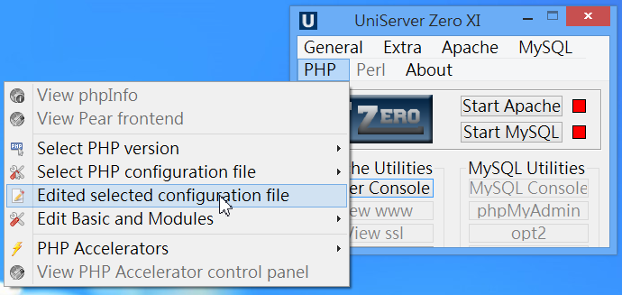
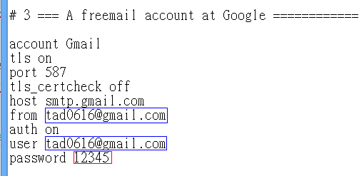

基本設定
基本上，安裝好無須設定什麼就能用了，但對於一些特別的需求，還是要設定一下會更好。
修改php.ini（重要）
請務必至少做以下兩個修改動作：
- Uniform Server 預設使用的 php.ini 版本其實是 C:\UniServerZ\core\php54\php_production.ini，可直接開啟編輯之
- 也可從控制台點選 PHP → Edited selected configuration file 來編輯之。

- 找到 display_errors 並將值改成 On （若未改，PHP將無法顯示錯誤訊息，偵錯會很困難）
- 找到 date.timezone 並將值改成 "Asia/Taipei" （若未改，系統時間將會差八小時）
- 其餘設定，請視需求修改之。
- 修改完，記得
如果沒有寄信需求，此步驟可略過
- 先Stop Apache，接著點選 General→Mail utility msmtp
- 按下左上角的 Edit configuration File 按鈕
- 將裡面的Email修改成您的Gmail信箱（藍色框部份），密碼請設定成該信箱密碼。（紅色框部份）

- 儲存後，可利用 2. 的那個界面來測試是否可以寄信。
修改網頁目錄位置
此步驟並非必須，但若您想將網頁目錄移至別的目錄下（例如移至 dropbox 中使之可以即時同步或備份），則可參考一下。
- 設定檔位置：C:\UniServerZ\home\us_config\us_user.ini
要轉移網頁目錄至其他位置（如： C:\Users\tad\Dropbox\www），請修改 US_ROOTF_WWW = C:/Users/tad/Dropbox/www
- DISPLAY_PAGE_2 可設成 no，如此就不會跳出 Uniform Server 的資訊頁視窗
- USER_EDITOR 可拿掉前面分號，並自行指定預設編輯器，例如：USER_EDITOR = C:/Users/tad/Dropbox/software/Sublime Text 3 x64/sublime_text.exe
- 停止Apache、MySQL後，關閉 Uniform Server 控制台，然後再重開 Uniform Server 控制台，啟動 Apache 即可生效。
修改資料庫實體檔案位置
此步驟並非必須，但若您想將資料庫實體檔案目錄移至別的目錄下，則可參考一下。
- 設定檔位置：C:\UniServerZ\home\us_config\us_config.ini
- 要轉移MySQL的資料庫實體檔案位置（如： C:\Users\tad\Dropbox\sql），請在檔案最後新增一組[MYSQL]
- 接著下一行寫入：datadir = C:\Users\tad\Dropbox\sql 即可
- 停止Apache、MySQL後，關閉 Uniform Server 控制台，然後再重開 Uniform Server 控制台，啟動 MySQL 即可生效。